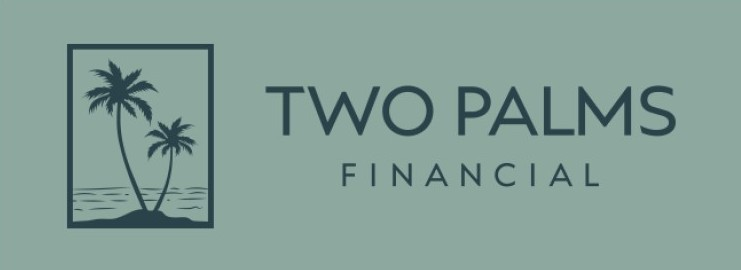
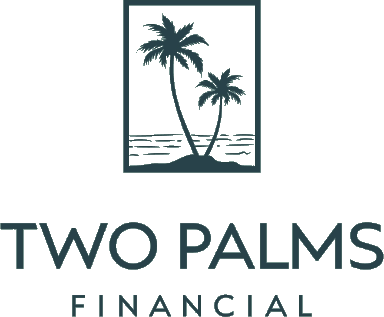

Find out how prepared your business is for a successful sale. This confidential assessment takes about 5 minutes and covers the financial, operational, and personal dimensions of exit readiness.
For business owners in the $3M to $50M in revenue range.

What we collect. Nothing. This assessment collects no personal information. All questions are answered and scored locally in your browser. No responses, scores, or identifying information are transmitted to Two Palms Financial or to any third party. Your report is generated on your own device.
Cookies. This page sets no cookies and uses no tracking technologies.
Links. This page contains links to Calendly and to the Two Palms Financial newsletter. Clicking those links takes you to third-party sites governed by their own privacy policies. No assessment data is passed to those links.
Contact. Daniel Costigan, Chief Compliance Officer. (314) 341-1284